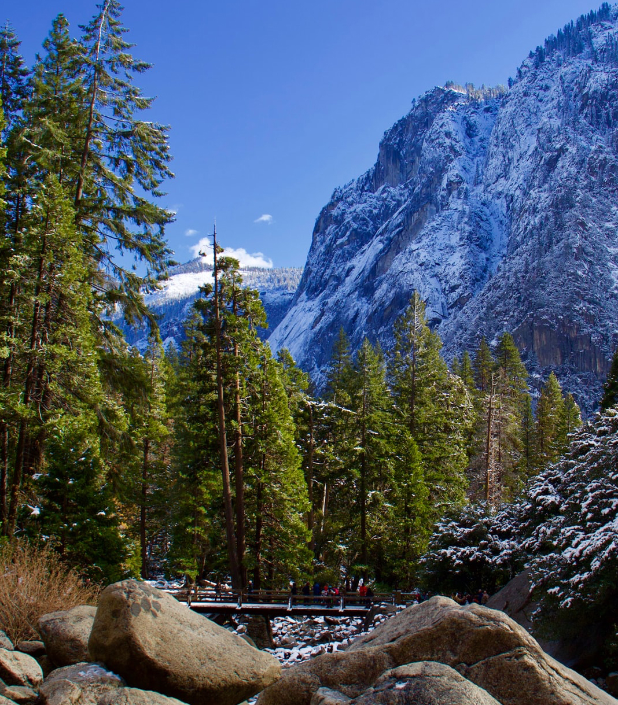

Yosemite Hikes
The best places to take your feet in Yosemite National Park
Breaking News
Limited Access Alert: Until November 1, when normal operations resume, you're not allowed into Yosemite unless you have camping or lodging reservations inside the park, you're entering via a commercial tour or YARTS bus, you have one of various sorts of permits (wilderness, Half Dome, or day-use), or you're one of those very fortunate people who live in Yosemite. See the park service website's COVID updates page for updates and the NPS reopening announcement for more details. Day-use permits, which are valid for seven days, are available from recreation.gov.
Where do I begin?
Yosemite Basics
What's so fabulous about Yosemite? It's got dozens of incomparable meadows and more than a hundred lakes, plus waterfalls as tall as a 200-story building, trees the size of rocket ships, mountains the size of - well, mountains - and even a few beaches. It's bigger than a handful of European countries and nearly the size of Rhode Island.
It also has more than 800 miles of trails, and you're likely to spend lots of your Yosemite vacation wandering on them. Whether you prefer paved thoroughfares that never take you beyond shouting distance of a restaurant (a perfectly respectable approach) or remote paths where man has never before set foot (except perhaps to build the trail you're on), you'll find it here.
Yosemite Regional Breakdown
Yosemite Valley
This is the place people are usually thinking of when they think about Yosemite. Many of the things Yosemite is famous for are here: El Capitan and Half Dome, Yosemite and Bridalveil Falls, the Mist Trail, the tunnel view. A fair number of people, too. You won't find solitude here unless you show up during a blizzard, but all those tourists have good reason to be here. There's simply no place else like it anywhere.
Tioga Pass Road
Tioga Pass Road is the A-list destination for the Yosemite sightseer who can't decide what he wants. It's got some of everything - granite peaks, alpine lakes and meadows, a giant sequoia grove, and even a few hikes to the north rim of Yosemite Valley.
Southern Yosemite
Home to the most renowned bunch of trees in the world. The Mariposa Grove has Giant Sequoias just hanging out in the parking lot that people would normally drive hundreds of miles to see, yet they're completely overlooked here due to the larger-than-life presences of the Grizzly Giant, the California Tunnel Tree, and a host of others.
Glacier Point Road
If you want to find out whether or not you're afraid of heights, there's no more scenic way to do it than to try the hikes off Glacier Point Road. Any of the trails with "Point" in the name lead to jaw-dropping, vertigo-inducing views over the sheer walls of Yosemite Valley.
Hetch Hetchy & Big Oak Flat
Hetch Hetchy Valley has been flooded for more than 80 years, much to the detriment of its own beauty and the environmental cred of the city of San Francisco, which is adamantly opposed to tearing the dam down. Despite the valley's destruction, there are still things to see here - a giant waterfall that's had its feet chopped off by the reservoir but is still impressive, and in the Big Oak Flat area, Yosemite's least crowded giant sequoia grove.